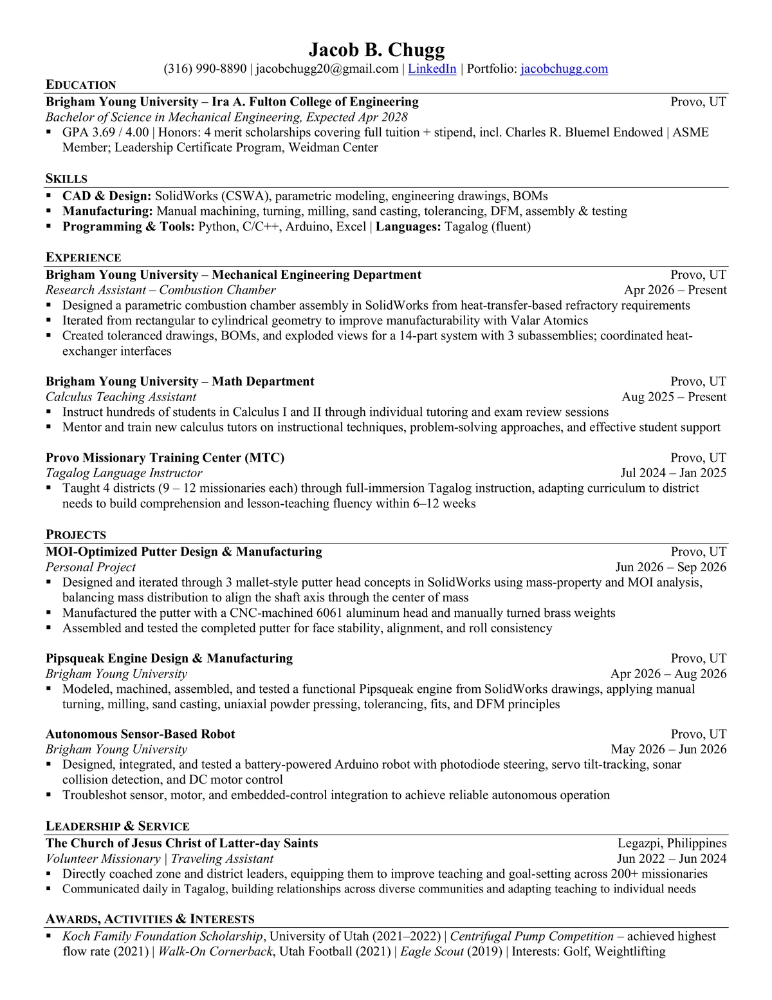

Resume
Full Resume

Jacob B. Chugg
A one-page resume covering education, research and teaching experience, project work, and manufacturing skills — the same source material behind every case study on this site.
Education
B.S. Mechanical Engineering, Brigham Young University — Expected April 2028. GPA 3.69/4.00. Four merit scholarships including the Charles R. Bluemel Endowed Scholarship. Member, ASME.
Experience
Research Assistant, BYU Mechanical Engineering Department (Apr 2026–Present) — combustion chamber design. Calculus Teaching Assistant, BYU Math Department (Aug 2025–Present). Tagalog Language Instructor, Provo MTC (Jul 2024–Jan 2025).
Projects
MOI-optimized putter design & manufacturing, Pipsqueak engine design & manufacturing, autonomous sensor-based robot, and a centrifugal water pump design competition at the University of Utah.
Skills
SolidWorks (CSWA Certified), parametric modeling, manual machining, tolerancing, sand casting, MIG welding, DFM, Python, C/C++, Arduino. Fluent in Tagalog.